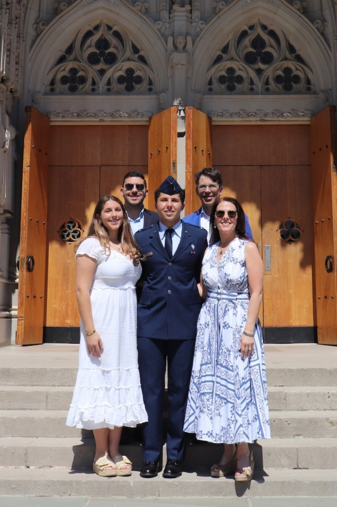
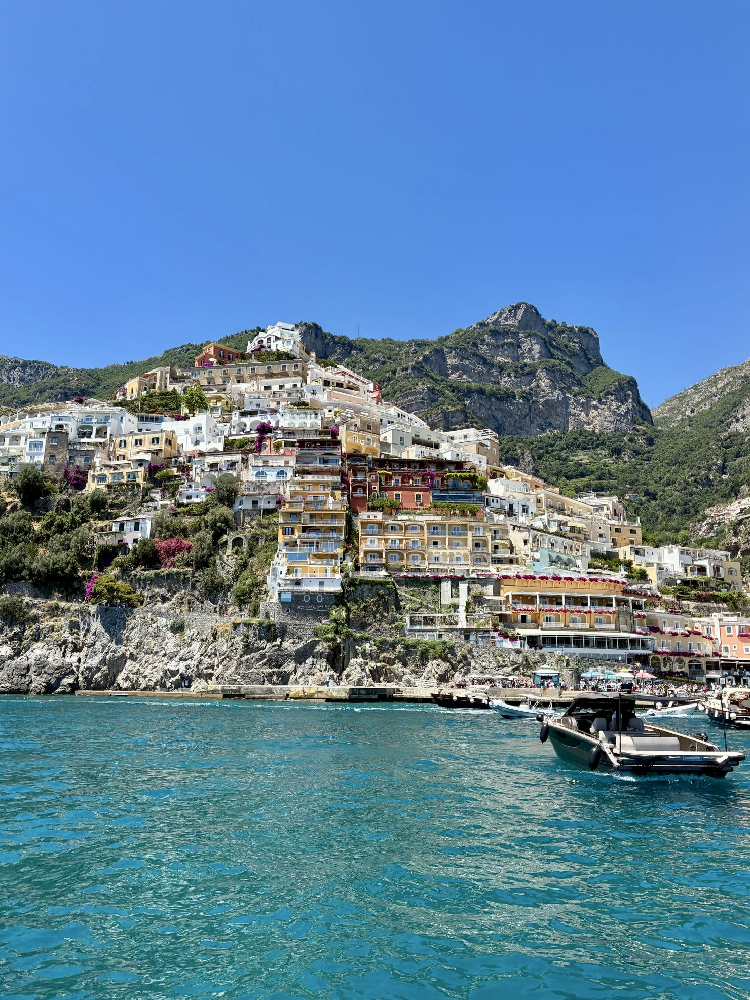
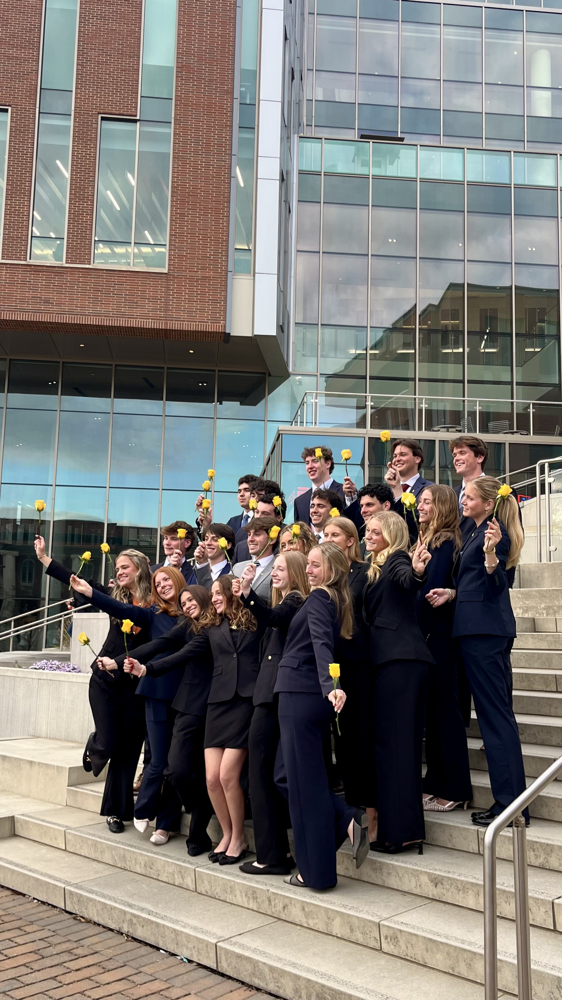

My Mindset
I like to understand what’s really going on before I start creating. I’m naturally drawn to people, culture, and everyday life, especially the things that are easy to overlook. I notice how people think, what they care about, and what makes something stand out. I’m always asking questions. Why does this work? Who is it really for? What makes it matter? To me, a good idea starts with understanding the people and the story behind it.
I’ve been making things for as long as I can remember. Homemade birthday cards, DIY room decor, and pretty much any excuse to turn an idea into something real. That part of me has never gone away. It has only grown. Now, I get to bring that same imagination and creativity into my work, turning the things I notice into something people can see, feel, and connect with.
Core Values

When away from my computer...

I value time with the people closest to me. Good conversations, shared experiences, and being fully present.

I’m love being on the move with family or friends, exploring new places and stepping away from routine.

I love hanging out with my brothers in AKPSI. It’s been one of the best parts of my time at Clemson so far, where I get to grow, work, and develop in so many different ways.